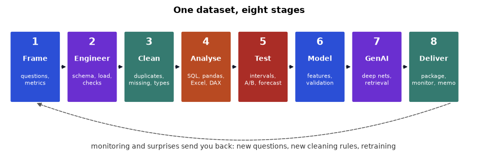

A single online-shop dataset analysed in eight stages and in every common tool, with real SQL and Python output, honest results, and a map of which role and which tool fits each stage.
Taught the IIT Professor Way — Real Numbers. Real Problems. Real Understanding.
Most courses teach one tool at a time: a SQL course, an Excel course, a machine learning course. Real work does not arrive that way. A manager sends you a folder of files and a vague worry, and you must find your own path from raw data to a decision, using whatever tools your company happens to have. This document teaches that path. It takes one dataset, the orders of an imaginary quick-commerce company called ShopKart, and walks it through eight stages: frame the problem, engineer the data, clean it, analyse it, test ideas statistically, build machine learning models, ask whether deep learning and generative AI add anything, and finally deliver, monitor and explain the result.
At every stage the same task is solved in several tools, and the answers are checked against each other. SQL, pandas and plain Python are run here and their real output is printed. Excel, Power BI (DAX and Power Query) and R are shown as exact formulas and steps, labelled "not run here", and cross-checked against the verified numbers. You will see why tools agree, why they sometimes differ, and which one to pick for which job. You will also see honest results, including ones that disappoint: a neural network that does not beat logistic regression, a forecast where the naive method wins, a significant difference that survives one check but may still not be real.

study/ways/data/ folder. Every code block starts with DATA = "...", the absolute path to that folder; change it if you move the files.| Stage | Main roles | Read next in the other documents | Here |
|---|---|---|---|
| 1 Frame | Everyone; the analyst leads | Analyst document, Chapter 1 (the analytics mindset) | Chapter 1 |
| 2 Engineer | Data engineer | Data Engineering document, Chapters 1, 4, 5 and 6; SQL document, Chapters 9 and 10 | Chapter 2 |
| 3 Clean | Analyst, data engineer | Analyst document, Chapter 5 (pandas cleaning); Data Science document, Chapter 2 | Chapter 3 |
| 4 Analyse | Analyst | SQL document, Chapters 3, 4, 8 and 12; Analyst document, Chapters 3, 9, 10 and 12 | Chapter 4 |
| 5 Test | Analyst, data scientist | Statistics document, Chapters 3, 4 and 12; Analyst document, Chapter 13; Data Science document, Chapters 7 and 9 | Chapter 5 |
| 6 Model | Data scientist, ML engineer | Machine Learning document, Chapters 4, 6, 7, 8 and 9; Data Science document, Chapters 5, 6 and 12 | Chapter 6 |
| 7 Deep and GenAI | ML and GenAI engineers | Deep Learning document, Chapters 1 and 2; NLP, LLMs, RAG and Agents document, Chapters 2, 6, 7 and 12 | Chapter 7 |
| 8 Deliver | ML engineer, analyst | MLOps document, Chapters 1, 7 and 10; Analyst document, Chapter 14 (memo); Career document for portfolio and interviews | Chapter 8 |
The data was generated by tools/ways/make_data.py with a fixed random seed, so every reader has identical files. It is synthetic: nothing in it is real customer data, and any patterns were built in by the generator or arose by chance. It also contains the faults of real data on purpose: 150 duplicate rows, eighteen spellings of five cities, missing values, impossible quantities and delivery times, and returns.
| File or table | Rows | Columns | Notes |
|---|---|---|---|
| orders.csv / orders | 20,150 (20,000 distinct orders) | order_id, customer_id, order_date, order_hour, city, channel, category, product, quantity, unit_price, discount, status, promised_minutes, delivery_minutes | 2024-01-01 to 2024-12-31; status is delivered, returned or cancelled; promised and delivery minutes empty for store pickup and cancelled orders |
| customers.csv / customers | 4,000 | customer_id, signup_date, segment, age | segment Regular, Premium or Student; about 4 percent of ages missing |
| products.csv / products | 32 | product_id, product, category, list_price, unit_cost, description | five categories; descriptions are used for text work in Chapter 7 |
| shopkart.db | 3 tables | same as the CSV files | SQLite database, used for all SQL examples |
| prep.py, mlprep.py | helpers | cleaning rules (Chapter 3) and feature builders (Chapters 6 to 8) | imported by code blocks from the data folder |
| Tool | Needed for | Status in this document |
|---|---|---|
| Python 3 with numpy, pandas, scipy, scikit-learn, matplotlib, joblib | All runnable code | Run, with real output |
| SQLite (built into Python through the sqlite3 module) | All SQL examples, window functions need SQLite 3.25 or newer | Run, with real output |
| Excel (desktop, 365 recommended) | Formulas, PivotTables, Power Query, charts | Shown as formulas and steps, not run here |
| Power BI Desktop (free) | Power Query, DAX measures, visuals | Shown as steps and measures, not run here |
| R with tidyverse (optional) | dplyr, readr and statistics equivalents | Shown, not run here |
| Optional extras: pyarrow, statsmodels, sentence-transformers, fastapi | Parquet, regression inference, embeddings, serving | Code shown, not run here |
If you do not own Excel or Power BI, read those parts as pseudocode: the logic is the same as the SQL and pandas next to them, and the appendix translates between them line by line.